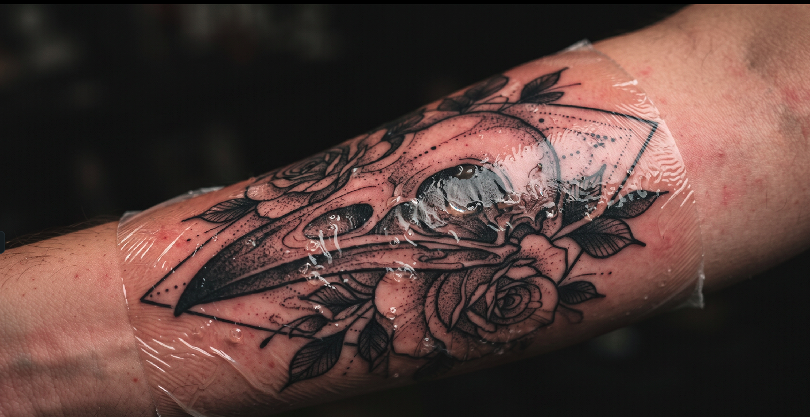
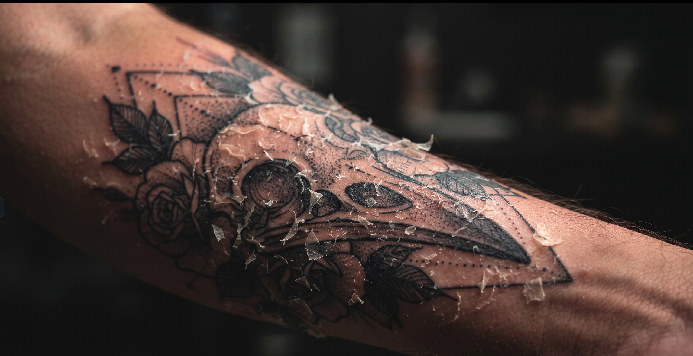
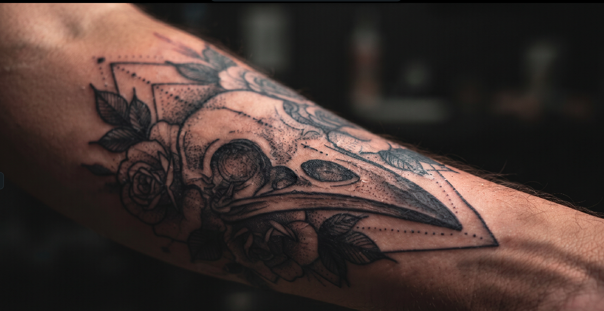

Пошаговое интерактивное руководство с визуальными примерами для оптимального заживления татуировки.

Оставьте начальную повязку на время, рекомендованное вашим мастером. Аккуратно промойте мягким мылом без отдушек, промомокните чистым бумажным полотенцем и нанесите очень тонкий слой рекомендуемой мази.

Ваша татуировка начнет шелушиться, как при легком солнечном ожоге. Это абсолютно нормально! Не ковыряйте, не царапайте и не отрывайте кожицу. Поддерживайте легкое увлажнение некомедогенным кремом.

Шелушение прекратится, но кожа может казаться слегка матовой, пока глубокие слои завершают восстановление. Продолжайте ежедневное увлажнение и защищайте татуировку кремом с высоким SPF на солнце.